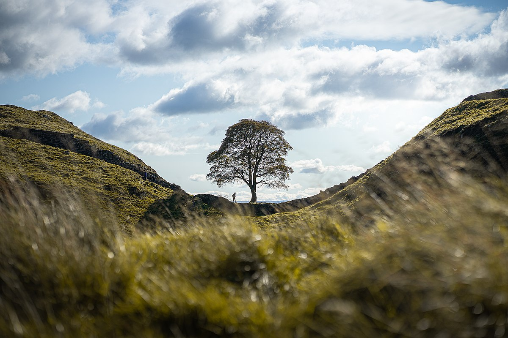

What is this page?
In the interest of nostalgia, I'm writing this page as though I were 12 and discovering online blogs for the first time. It's surprisingly fun!
Born too late to explore MySpace / Born too early to explore sustainable options for future development / Born just in time for... this.
Here's my ~cool~ unordered list:
- Isn't
- it
- cool?
And here's my (slightly less cool) ordered list:
- I guess
- it's
- okay...
Links!
My relative/internal link (Should lead to tree image)
{kind=link}
Here's the source, in the same tab
And here's the source, in a new tab
Don't want to click links? Here's the image anyway!
Here's a second, cool-ified version of it:
Margins!
I'm using a margin to stay 50 pixels from above and below, and 30 pixels from the left edge!
I'm here to hold space between the margin'd text
And I'm using a margin to appear in the centre of the page!
And padding!
It's that picture again. The picture and this text are in a div(ision), to check padding
Grid Stuff! Just walking through W3S's examples for now...